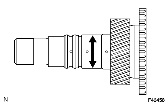
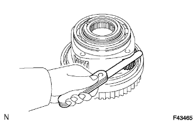
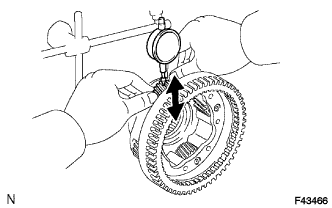
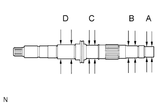
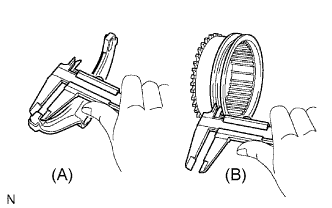
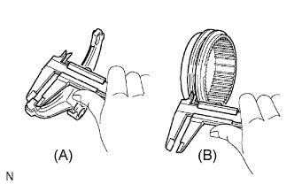
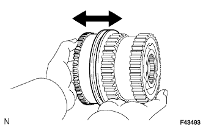
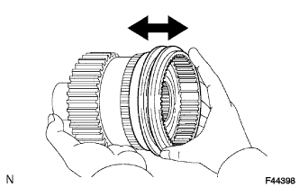

TRANSFER ASSEMBLY > INSPECTION |
| 1. INSPECT TRANSFER INPUT SHAFT |
|  |
Using a micrometer, measure the outer diameter of the input shaft journal surface.
| 2. INSPECT PLANETARY PINION GEAR THRUST CLEARANCE |
|  |
Using a feeler gauge, measure the thrust clearance of the planetary pinion gear.
| 3. INSPECT PLANETARY PINION GEAR RADIAL CLEARANCE |
|  |
Using a dial indicator, measure the radial clearance of the planetary pinion gear.
| 4. INSPECT TRANSFER OUTPUT SHAFT REAR |
|  |
Using a micrometer, measure the outer diameter of the output shaft rear journal surfaces.
| 5. INSPECT TRANSFER HIGH AND LOW CLUTCH SLEEVE AND NO. 2 TRANSFER GEAR SHIFT FORK CLEARANCE |
|  |
Using a vernier caliper, measure the thickness of the shift fork claw.
Using a vernier caliper, measure the width of the groove of the high and low clutch sleeve.
Calculate the clearance between the high and low clutch sleeve and shift fork.
| 6. INSPECT FRONT DRIVE CLUTCH SLEEVE AND CENTER DIFFERENTIAL LOCK FORK SUB-ASSEMBLY CLEARANCE |
|  |
Using a vernier caliper, measure the thickness of the center differential lock fork claw.
Using a vernier caliper, measure the width of the groove of the front drive clutch sleeve.
Calculate the clearance between the front drive clutch sleeve and differential lock fork.
| 7. INSPECT CENTER DIFFERENTIAL CASE AND TRANSFER HIGH AND LOW CLUTCH SLEEVE |
|  |
Check that the splines of the clutch sleeve are not worn.
Install the clutch sleeve to the center differential case and check that the clutch sleeve moves smoothly.
| 8. INSPECT CENTER DIFFERENTIAL CASE AND FRONT DRIVE CLUTCH SLEEVE |
|  |
Check that the splines of the clutch sleeve are not worn.
Install the clutch sleeve to the center differential case and check that the clutch sleeve moves smoothly.